Bollettini neve
Bollettini neve quotidiani per sciatori: dove c'è neve, cosa arriva e dove sciare, dalla mappa neve di SnowScope e dalle stazioni di misura. Ogni numero viene dai dati del giorno.
L'Italia ha guadagnato una copertura nevosa significativa in una settimana, con la Valle d'Aosta che ha ricevuto 176 cm in 72 ore. SnowScope mostra 30.400 km² bianchi il 24 novembre.

Tre comprensori dolomitici confrontati con 46 inverni passati di altezza neve a metà montagna e in vetta, mese per mese: perché le Dolomiti sono povere a valle e generose sugli altipiani, e quali settimane prenotare.
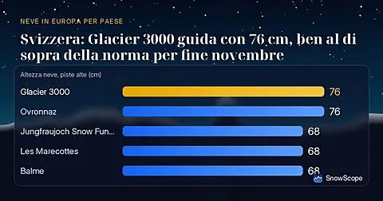
La Svizzera ha 76 cm a Glacier 3000 il 23 novembre, più neve che in nove inverni su dieci. Le Alpi dell'Oberland Bernese e del Vallese hanno ricevuto fino a 144 cm in tre giorni.

Prà Alpesina vedrà 57 cm di neve fresca entro il 26 novembre. I dati del 23 novembre mostrano le precipitazioni più intense il 25 novembre con lo zero termico in rialzo.
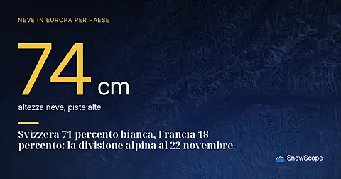
Alpi svizzere coperte al 71 percento di neve rispetto al 18 percento in Francia al 22 novembre. Il Vallese registra 166 cm in 72 ore.
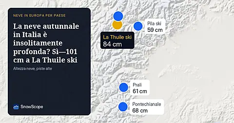
L'Italia ha 101 cm a La Thuile ski il 22 novembre, tre volte la profondità normale per questa data. La Valle d'Aosta ha registrato 242 cm in 72 ore.

164 stazioni italiane hanno neve oggi. Pfelders guida con 118 cm sui pendii superiori. Fino a 55 cm sono caduti in tre giorni.
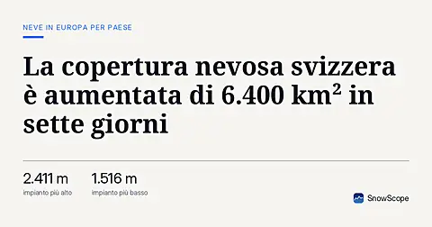
Il manto bianco della Svizzera è cresciuto di 6.410 km² in una settimana.
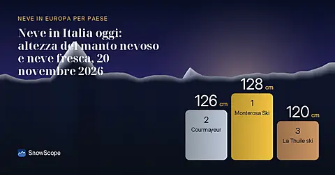
L'Italia mostra il 22 % di copertura nevosa al 20 novembre contro il 44 % dell'Austria. Monterosa Ski guida con 128 cm mentre la neve fresca continua a cadere.
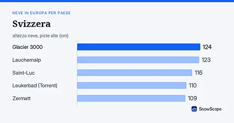
Glacier 3000 guida la Svizzera con 124 cm dopo 128 cm di neve in 72 ore. La copertura nevosa è salita al 64% in tutto il paese il 20 novembre.

Skipass giornalieri alpini da 36 EUR: nove stazioni confrontate per prezzo, chilometri di piste e neve che offrono di solito, per trovare la miglior giornata di sci in rapporto al prezzo.

Skipass giornalieri nei Pirenei da 46 EUR: sei stazioni tra Francia, Spagna e Andorra confrontate per prezzo, poi per la neve che hanno di solito a dicembre e gennaio.

Sci sul ghiacciaio da 68 EUR al giorno: abbiamo confrontato sette ghiacciai in Francia, Austria, Germania e Svizzera per prezzo e per la neve che di solito trattengono a dicembre.

Sei giorni di sci da 191 EUR: abbiamo classificato dieci settimane sugli sci low cost in Europa per prezzo, poi abbiamo controllato 46 inverni passati per capire dove la neve è affidabile.
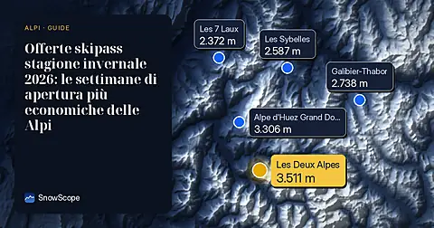
Da 20 EUR per un weekend di apertura a skipass da 6 giorni prima di Natale: un calendario delle offerte sci più economiche di inizio stagione nelle Alpi per il 2026, con la neve che puoi aspettarti.
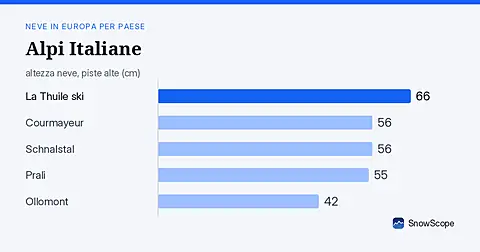
Neve fresca ha colpito duramente le alte quote italiane. La Valle d'Aosta ha ricevuto 215 cm in 72 ore; le Alpi Piemontesi 76 cm. Dati del 19 novembre.
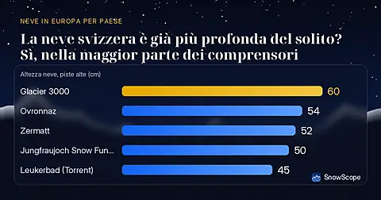
Le profondità della neve svizzera il 19 novembre sono ben al di sopra della norma. Glacier 3000 registra 60 cm, più del doppio della profondità tipica per questa data. La prossima settimana porterà fino a 125 cm in più.

Zermatt ha 47 cm sui versanti superiori oggi, 690% al di sopra della mediana di novembre. Il livello 0°C rimane al di sopra di 2200 m fino a venerdì.
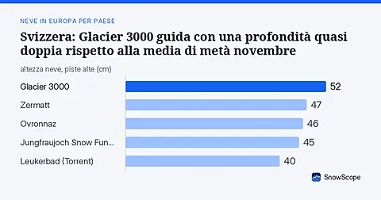
Le stazioni sciistiche svizzere hanno il 142% della copertura nevosa normale per il 18 novembre. Glacier 3000 è in testa con 52 cm, prima delle forti nevicate previste.

L'Italia affronta un evento nevoso importante: fino a 95 cm sono previsti nei prossimi 7 giorni, con 34 cm attesi venerdì 20 novembre. Dati del 18 novembre.


A Andermatt (2963 m) la previsione indica 75 mm di precipitazioni dal 15 novembre al 20 novembre. Nelle ore di pioggia lo zero termico è vicino a 2160

Les Deux Alpes: quanta neve fresca è caduta? 38 cm in 72 ore (15 novembre). Dove è caduta più neve fresca sulle Alpi? La Grave ha ricevuto 41 cm di …

Courmayeur guida le previsioni con 88 cm in 72 ore; la profondità della neve è al 142 percento della norma per metà novembre secondo i dati del 15 novembre.

Beaver Mountain offre forfait a prezzo fisso di 75 dollari senza maggiorazioni nei giorni di punta. L'inizio di dicembre è spesso scarso; punta alla metà del mese o dopo, quando la neve è più affidabile.

Bridger Bowl chiede $86 online per il 2026/27. A metà montagna ci sono 20 cm il 15 dicembre in metà degli inverni; la settimana di Natale migliora le probabilità al 78 %.
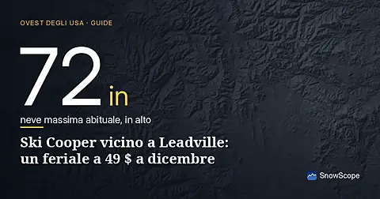
La stazione sciistica d'alta quota in Colorado mantiene lo skipass per adulti nei giorni feriali a 49 dollari per la stagione 2026-27; la neve a metà montagna raggiunge 66 cm verso la metà di dicembre in un inverno tipico. Dati del 13 novembre 2026.

Sunlight vicino a Glenwood Springs affronta una scommessa di inizio stagione a dicembre. A metà mese puoi aspettarti 67 cm a mezza montagna, anche se solo il 72% degli inverni raggiunge quella profondità.

La mezza montagna di Timberline ha 52 in (132 cm) di neve tipica il 15 dicembre. I pendii superiori raggiungono 58 in (147 cm). I biglietti giornalieri interi partono da $129 in bassa stagione.

Da Ski Cooper (49 $ nei giorni feriali, 99 $ nel weekend) a Mt. Baker (98,80 $ contro 115,42 $): le differenze di prezzo di dicembre verificate in sette stazioni dell'Ovest americano, con le loro probabilità di neve.

Indy Base Pass 419 $, Indy+ 469 $, due giorni in ogni stazione aderente. Lo abbiamo confrontato con i prezzi giornalieri verificati di sette stazioni Indy a dicembre, e le loro probabilità di neve.
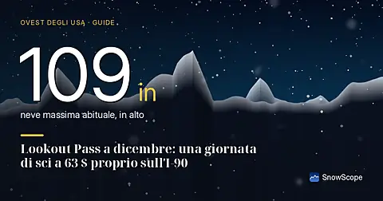
Lo skipass feriale di Lookout Pass costa 63 $ prenotato in anticipo. A metà dicembre la parte alta della montagna di solito mantiene 75-95 cm. Dati del 13 novembre 2026.

Resort locale vicino a Missoula a 7.530 ft (2.296 m) con skipass giornalieri a $78 nei giorni feriali. Le piste di mezzo e di vetta mantengono tipicamente 76–93 cm a metà dicembre. Dati del 13 novembre 2026.

Il 3-Pack di Schweitzer offre tre giorni per $249 su un crinale che sale da 1.221 m a 1.949 m. La neve a metà montagna il 15 dicembre raggiunge in media 90 cm, con l'85% degli inverni sopra 50 cm.
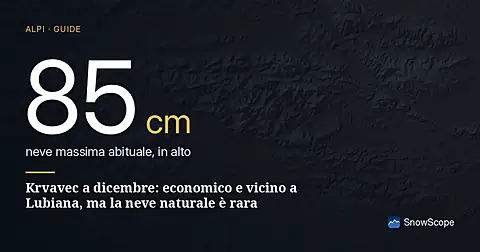
Krvavec a mezza montagna ha 13 cm di neve tipica il 15 dicembre in 46 inverni, ma terreno nudo in 11 di loro. Giornaliero EUR 47.
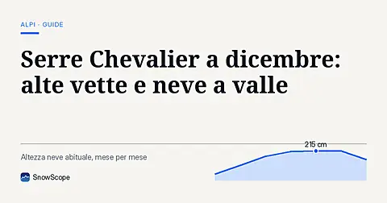
Scia su 157 km di piste mappate a Serre Chevalier, dove la cima della montagna ha una probabilità del 100 % di avere neve entro metà dicembre.

Turracher Höhe ha 23 cm a mezza montagna il 15 dicembre tipico, ma solo il 39% degli inverni raggiunge 30 cm lì a metà dicembre. Dati dal 13 novembre 2026.
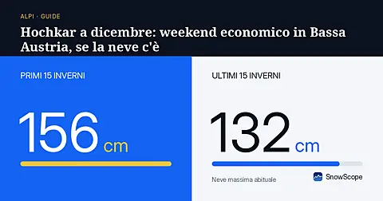
Hochkar a mezza montagna ha 38 cm in un 15 dicembre tipico, e il 63 % degli inverni ha avuto 30 cm o più in quella settimana. Skipass giornalieri da EUR 32,90 in giorni tranquilli.

Le probabilità di neve a Idre Fjäll a dicembre migliorano nettamente dopo metà mese. Il 13 novembre, la profondità tipica a media montagna il 15 dicembre è di 32 cm.

Brighton guida all'inizio di dicembre con 37 pollici (94 cm) di neve tipica il 15. Wolf Creek si allinea a Natale. Prezzi e affidabilità a confronto.

Dieci stazioni sciistiche europee classificate per il valore di dicembre, guidate da Les 2 Alpes con 75 cm di neve a metà montagna.
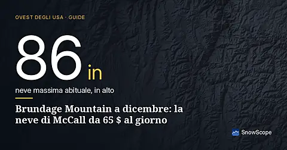
Brundage Mountain offre neve affidabile all'inizio della stagione vicino a McCall, Idaho. La profondità tipica a metà montagna raggiunge 77 cm entro la metà di dicembre, con skipass a partire da 65 dollari in giorni selezionati.
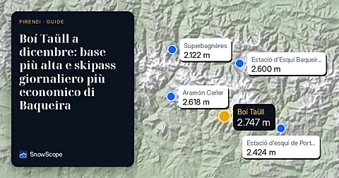
Boí Taüll parte da 2039 m e batte Baqueira Beret sul prezzo dello skipass, anche se la neve di inizio dicembre richiede un po' di pazienza.

Sälen a dicembre: 28 cm in un tipico 15 dicembre e 48 % degli inverni con 30 cm a metà dicembre, meno che negli anni '80; Trysil accanto fa meglio.

Snow King si trova alla base di Jackson. A metà dicembre, la mezza montagna di solito accumula 71 cm. Dati aggiornati al 13 novembre 2026.

Orcières Merlette offre una base elevata a 1.826 m e uno skipass di 6 giorni da 227 EUR, rendendolo una scelta affidabile per una vacanza sulla neve a dicembre.

Alpe d'Huez merita per dicembre 2026? Controlliamo le probabilità di neve, il prezzo di partenza di 58,00 EUR e confrontiamo con Les 2 Alpes.

Gli skipass sloveni sono i più economici (Krvavec 205 EUR per 6 giorni), ma lì la neve naturale di dicembre è rara; Lachtal, Hochkar e il ghiacciaio della Möll fanno meglio.

Loveland vende biglietti online a $60 fino al 13 dicembre, poi $159 dal 14 dicembre. Le nevicate di inizio dicembre mediamente raggiungono 50 cm a metà montagna, ma la base è profonda la metà rispetto a metà inverno.

Cauterets offre 25 km di piste per 46 EUR, ma la nostra storia della neve mostra che la migliore possibilità di trovare copertura è l'ultima settimana di dicembre.

Lachtal costa 62 EUR al giorno e i bambini sotto i 7 anni sciato gratis. A metà montagna ha avuto 30 cm o più nel 72 % dei diciembri dalla metà del mese in poi. Profondità della neve l'13 novembre 2026.

White Pass premia le prenotazioni anticipate nei giorni feriali. A metà dicembre, a media quota si accumula in genere 40 in (102 cm). Dati del 13 novembre 2026.

Scia sui 131 km di piste della Forêt Blanche questo dicembre con uno skipass di sei giorni a 298 EUR.

Lo skipass di 6 giorni a Ruka costa EUR 265. Le probabilità di neve passano dal 39% all'inizio di dicembre all'85% nella settimana di Natale. Pianifica da metà mese in poi.
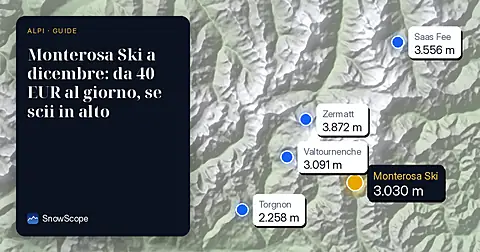
Al Monterosa Ski lo skipass giornaliero online va da 40,00 a 71,00 EUR. A dicembre la neve è in quota: 124 cm abituali a 3.030 m, 6 cm a 1.207 m.
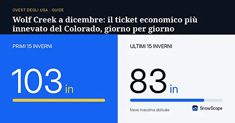
Wolf Creek ha 87 cm a media quota in una stagione tipica al 15 dicembre. I prezzi di punta iniziano il 20 dicembre. Dati: 13 novembre 2026.

Il 15 dicembre a Fellhorn/Kanzelwand: 63 cm in cima a 1965 m, 30 cm a mezza montagna, solo 10 cm alla base a 918 m. Pianifica di conseguenza.

Pianifica il tuo viaggio a Les Orres nel dicembre 2026 confrontando i prezzi dei pass settimanali con il nostro storico della neve di 46 inverni passati.

La mezza montagna di Hemavan ha 82 cm di neve il 15 dicembre medio. In ogni inverno dei 46 anni di dati, a metà dicembre c'erano almeno 30 cm. Dati dal 13 novembre 2026.

La mezza montagna di Brighton mantiene tipicamente 37 cm (94 cm) il 15 dicembre. Dati aggiornati al 13 novembre 2026.

Confronta Grandvalira e le stazioni spagnole a dicembre 2026 per profondità della neve, altitudine degli impianti e prezzi a partire da 49,00 EUR.

Pitztaler Gletscher mantiene meglio di molte stazioni alpine la neve di dicembre: 87 cm a media quota a metà dicembre, con ogni inverno recente sopra 30 cm. Dati 13 novembre 2026.

16 stazioni sciistiche USA classificate per probabilità di neve entro il 15 dicembre e prezzo dello skipass giornaliero per adulti. Grand Targhee guida con il 100% di probabilità; cinque stazioni combinano oltre l'80% di probabilità con skipass sotto i $80. Dati del 13 novembre 2026.

Per una settimana bianca in famiglia a basso costo a dicembre ad Astún-Candanchú, punta a fine dicembre, quando le piste in quota hanno buona neve nel 67 % degli inverni passati.

Solo Zugspitze e l'alto Fellhorn mantengono in modo affidabile 30 cm a metà dicembre. Le colline bavaresi più basse offrono skipass più economici ma probabilità di neve molto inferiori. Dati dal 13 novembre 2026.

Puy-Saint-Vincent offre uno skipass giornaliero adulto a 44 EUR con buona neve a dicembre in quota, confrontato qui con il grande vicino Serre Chevalier.

Grand Targhee garantisce neve affidabile a dicembre a tutte le quote. A metà montagna, 118 cm è tipico entro metà dicembre, con il 100% degli inverni che raggiungono almeno 50 cm. Dati del 13 novembre 2026.

La base di Oppdal ha 60 cm di neve in un tipico 15 dicembre, con il 93% degli inverni che mantengono 30 cm o più a metà dicembre. Dati da 46 inverni.

Grimentz-Zinal offre 71 km di piste e una neve sicura in alta quota per il tuo viaggio di dicembre, con skipass di 6 giorni a CHF 339,00.

Austria prima di Natale: Galtür 258 EUR e Kühtai 269 EUR per 6 giorni, con 30 cm in oltre il 90 % degli inverni; i ghiacciai costano di più, le piccole stazioni sono un azzardo.
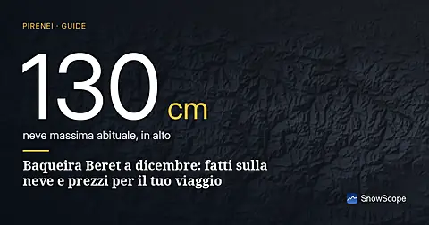
Stai pianificando un viaggio a dicembre a Baqueira Beret? Guarda la nostra cronologia della neve, i prezzi dei biglietti a partire da 70,00 € per un pass giornaliero e come si confronta con Astún-Candanchú.

Classifichiamo le stazioni sciistiche francesi in base alle probabilità di neve a dicembre e ai prezzi dei pass, partendo da 36,00 EUR per un pass giornaliero adulto a Les Karellis.

Dicembre porta solo 18 cm di profondità tipica a mezza montagna a Oukaimeden, contro 53 cm a marzo. L'inizio stagione è scarso ma possibile. Dati 13 novembre 2026.

La mezza montagna di Galtür tiene 55 cm il 15 dicembre in un anno tipico. Gli skipass di bassa stagione costano EUR 55,50 fino al 18 dicembre. Dati da 46 inverni, 1980-81 a 2025-26.
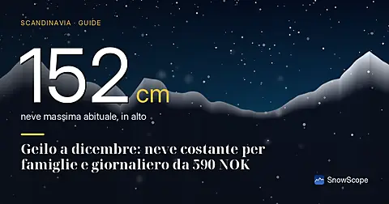
La fascia media di Geilo rimane sciabile nel 96% dei dicembri. Profondità tipica al 15 dic: 42 cm in basso, 57 cm in mezzo, 68 cm in alto. Giornaliero da NOK 590.

Grandvalira viene spesso venduta come una meta economica per sciare a dicembre, eppure la neve naturale alla base è in media di soli 9 cm negli scorsi inverni.
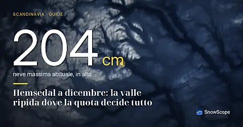
Il 15 dicembre, Hemsedal mostra 32 cm alla base, 70 cm a mezza montagna e 106 cm in vetta. L'altitudine è tutto qui.

Il 15 dicembre a 3245 m, Hintertux ha 98 cm di neve in 46 inverni di storia. Ogni inverno ha avuto 30 cm o più nella settimana prima di Natale lassù.
Confronta le probabilità di neve a dicembre e i prezzi verificati degli skipass a partire da 40,00 EUR nelle aree sciistiche italiane per la tua gita in auto nel weekend.

La base di Kühtai a 1939 m rimane innevata in modo affidabile a dicembre. Il 15 dicembre típicamente 60 cm in base, 72 cm a metà montagna, 112 cm in vetta. Stagione bassa: lo skipass di 6 giorni a EUR 269 fino al 18 dicembre.

Les 2 Alpes raggiunge i 3.511 m per neve abbondante a dicembre 2026, con un skipass adulti di 6 giorni a 266,50 EUR.

Les Karellis offre 45 km di piste e uno skipass adulto di 6 giorni a 191,00 EUR con una probabilità del 98 % di neve a metà montagna a fine dicembre.

La neve di dicembre a Levi si è rafforzata nel tempo. Ultimi 15 inverni: 100% delle settimane natalizie ha avuto 30 cm o più. Profondità tipica 15 dicembre: 38 cm. Dati 13 novembre 2026.

Scia a Livigno per 51,50 EUR al giorno prima del 18 dicembre, quando la neve in cima raggiunge i 30 cm nel 100 % degli inverni passati.

Il 15 dicembre a Michlifen, l'89% degli inverni è quasi privo di neve. Le migliori occasioni arrivano dopo una tempesta, non dal calendario. Dati del 13 novembre 2026.
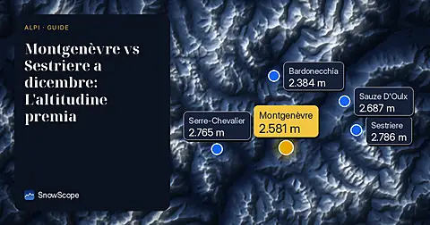
Montgenèvre ha 56 cm di neve abituale a dicembre alla base, offrendo agli sciatori del weekend una copertura migliore rispetto a Sestriere, oltre il confine.

Sciare a Obertauern a dicembre: 43 cm in un tipico 15 dicembre a metà montagna, skipass 6 giorni a 331 EUR prima di Natale. Storico neve e prezzi.

Nella stazione sciistica di Oukaïmeden in Marocco, un tipico 15 dicembre porta solo 16 cm a mezza montagna. SnowScope mostra le probabilità da 46 inverni di dati.

Oukaïmeden si trova a 50 km da Marrakech. La neve di dicembre è sottile e imprevedibile: pianifica intorno alle tempeste, non al calendario. Dati dal 13 novembre 2026.

Il 15 dicembre, Oukaïmeden a mezza montagna ha 16 cm contro i 89 cm di Val Thorens. Abbiamo controllato i prezzi degli impianti. Dati del 13 novembre 2026.

Pila sopra Aosta offre uno skipass giornaliero fisso a 60,00 EUR e neve affidabile a dicembre sulle quote alte.

Gli impianti di Saas-Fee raggiungono i 3.556 m, dove la nostra storia della neve mostra che il 100 % degli inverni passati ha almeno 30 cm di neve entro metà dicembre.

La neve a mezza montagna raggiunge 30 cm nell'83–100 % dei diciembri in Scandinavia. Prezzi fissi in Finlandia; prezzi dinamici in Norvegia e Svezia. Dati da 46 inverni, 13 novembre 2026.

Probabilità di neve a dicembre su 46 inverni e prezzi giornalieri verificati: Ski Cooper 49 $, Les 3 Vallées 75,70 €, Oukaïmeden senza tariffa ufficiale. Dove funziona una giornata di sci economica a dicembre.
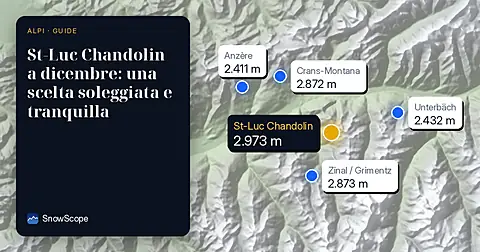
Scopri le piste tranquille di St-Luc Chandolin, dove la neve a metà montagna ha raggiunto i 30 cm nel 98 % degli inverni a fine dicembre.

Trysil a dicembre: 44 cm a metà montagna in un tipico 15 dicembre, 83 % degli inverni con 30 cm a metà dicembre; i prezzi sono dinamici, quindi prenotate presto.

Valloire-Valmeinier offre 131 km di piste e il 98 % di probabilità di avere 30 cm di neve a metà montagna entro metà dicembre.

Il ghiacciaio Zugspitze ha 122 cm di neve tipica il 15 dicembre a 2627 m; la cima di Garmisch-Classic ne ha 57 cm. Stesso prezzo, copertura nevosa diversa. Dati da 46 inverni.
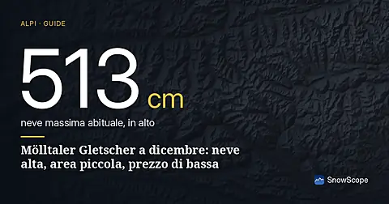
Mölltaler Gletscher a dicembre: 66 cm all'impianto più basso (2103 m) e 128 cm a metà montagna in un tipico 15 dicembre; 6 giorni in bassa stagione 332 EUR.

Mt. Baker a dicembre: 46 in (116 cm) di neve a metà montagna in un tipico 15 dicembre, e uno skipass da 98,80 $ dal lunedì al giovedì, venduto solo in giornata alla cassa.

Un principiante prudente può fidarsi di Courmayeur a dicembre, quando la media a metà montagna è di 60 cm di neve nei nostri inverni passati?

Prenota 15-21 dicembre ad Åre per le migliori probabilità di neve prima della folla natalizia. L'89% degli inverni ha avuto 30 cm a mezza montagna quella settimana. Dati del 13 novembre 2026.

Il riconoscitore di cime di SnowScope è un'app gratuita per riconoscere le montagne: punta il telefono verso i monti e ti dice il nome delle cime, con quota, distanza e tempo di salita. I nostri test: il 98 % delle cime che mostra è davvero in vista, e su foto reali ha corretto errori della bussola fino a 105° portandoli a 0,15°. Gratis con 3 nomi, tutte le cime con 0,99 € una sola volta.
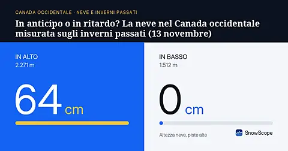
La riserva di neve si sta riempiendo come al solito? Abbiamo confrontato la neve di oggi in 5 località nel Canada occidentale con la stessa data in …

Punto neve a Bogus Basin per chi scia da Boise il 13 novembre 2026: ancora niente neve al suolo, pioggia e neve bagnata nel weekend con il limite verso 6,300-6,800 ft, poi aria più fredda e circa 8 in in vetta entro la prossima settimana.

La mappa delle piste di Sillian (Hochpustertal) con il nostro strato di neve il 13 novembre 2026: 8,6 cm in vetta a 2399 m, pendii bassi scoperti e una settimana di pioggia e neve miste con il limite verso 1.800-2.000 m.

Bollettino neve di Lech Zürs del 13 novembre 2026: circa 6 cm in vetta (2436 m) e a metà montagna, niente a Lech a 1430 m. Questa settimana 42 cm in alto secondo la nostra previsione, fino a 91 cm secondo altre, pioggia e neve mista intorno ai 1400 m. E perché Lech è il lato nevoso dell'Arlberg.

Cosa indossare, cosa portare e quando sciare, località per località. I consigli …
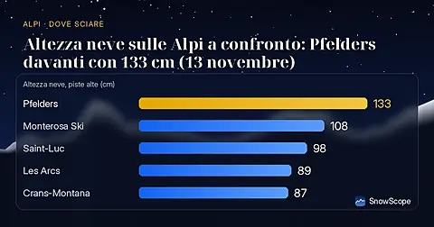
Dal 11 novembre la copertura nevosa è passata da 39.090 km² a 76.100 km²; il 16 novembre la previsione indica 57.910 km². Pfelders ha oggi il manto …

Le località sciistiche dell'Atlante oggi non trattengono neve sulle piste. La neve è immagazzinata solo sulle vette più alte: circa 40 km² di …

Bollettino neve di Obergurgl del 13 novembre 2026: circa 20 cm in vetta (3024 m), 5 cm a metà montagna, niente agli impianti più bassi (1784 m). Previsioni della settimana: 34 cm in alto, 21 cm in basso, quota neve intorno ai 1700 m. E il solito inizio di stagione.

Altezza neve a Sölden il 13 novembre 2026: circa 9 cm in vetta (3245 m), 5 cm a metà montagna, niente in valle a 1346 m. 25 cm previsti in alto questa settimana, pioggia sotto i 1620 m circa. Ghiacciaio contro paese, con 46 inverni passati.

Nevicate a Val Thorens, 13 novembre 2026: 27 cm caduti in vetta (3175 m) e 17 cm a 2498 m in sette giorni; l'altezza della neve è 50 cm e 8 cm. Prossimi sette giorni: 86 cm in vetta, 73 cm a 2498 m, limite delle nevicate ben sotto il paese. La stagione abituale da 46 inverni.

L'altezza della neve a Chamonix il 13 novembre 2026, quota per quota: niente sul fondovalle, 1 cm a 2001 m, 12 cm in cima a Brévent-Flégère (2486 m), da 5 a 24 cm in cima ai Grands Montets (2768 m). Circa un metro previsto in quota questa settimana, pioggia in valle. Quanta neve fa di solito a Chamonix, da 46 inverni.
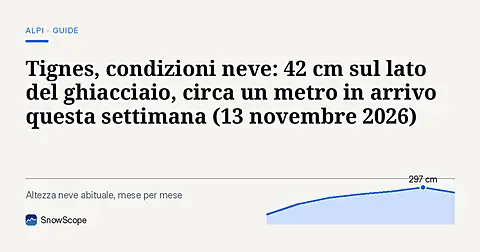
Condizioni neve a Tignes il 13 novembre 2026: 42 cm in vetta (3447 m), 12 cm a 2503 m, fondovalle senza neve a 1559 m e 99 cm previsti in vetta in sette giorni, con pioggia sotto i 1700 m circa. Il confronto con 46 inverni passati.
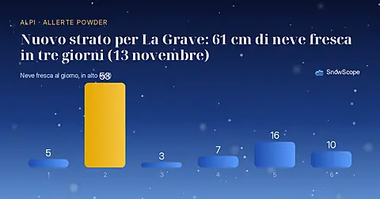
Neve fresca a La Grave: 61 cm nelle ultime 72 ore, compresi 3 cm nelle ultime 24. SnowScope neve ora mette circa 78 cm sui pendii superiori. …
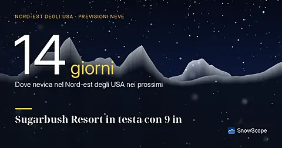
Dove nevicherà nel Nord-est degli USA tra il 13 novembre e il 26 novembre, e quanto? Abbiamo interrogato le due previsioni globali che arrivano a due …
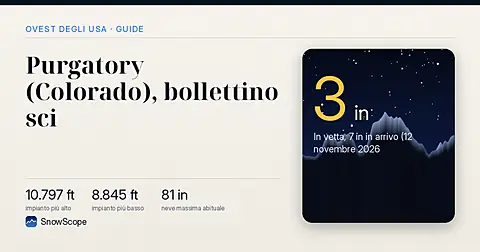
Il bollettino sci di Purgatory Resort (Durango, Colorado) dal nostro modello di neve: 3 in (7 cm) in vetta, base e metà montagna senza neve, da 4 a 7 in di neve fresca previsti nei prossimi sette giorni, e com'è un inverno abituale a Purgatory.

Bollettino neve sui Pirenei, 12 novembre. Guardando al 15 novembre, la previsione porta 33 cm a Cauterets Cirque du Lys, 29 cm a Piau-Engaly e 25 cm …